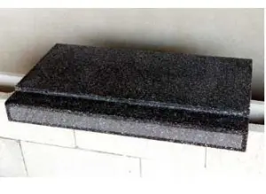
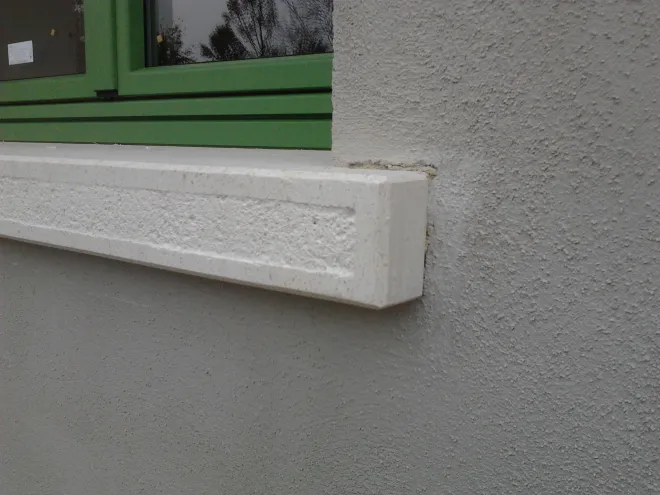

Lavorazioni su misura
Davanzali
I davanzali, come le scale, sono una delle espressioni più tipiche della lavorazione delle graniglie.
Vengono eseguiti in funzione dello specifico serramento installato sulla finestra. Laddove richiesto, per esempio in presenza di una sporgenza interna del davanzale, è possibile tagliare il ponte termico.
Per la sagoma non esistono limitazioni: si può partire dalla costa dritta e arrivare fino alle forme più articolate e personalizzate.





Un prodotto su misura
Materiali, forma, dimensioni e finitura vengono valutati in base al progetto e al serramento. Per informazioni su colori, granulometrie e lavorazioni disponibili, contattaci.